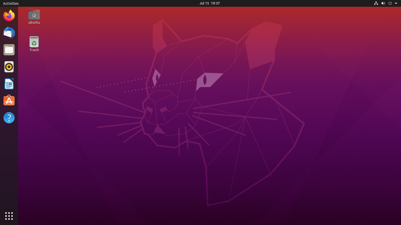
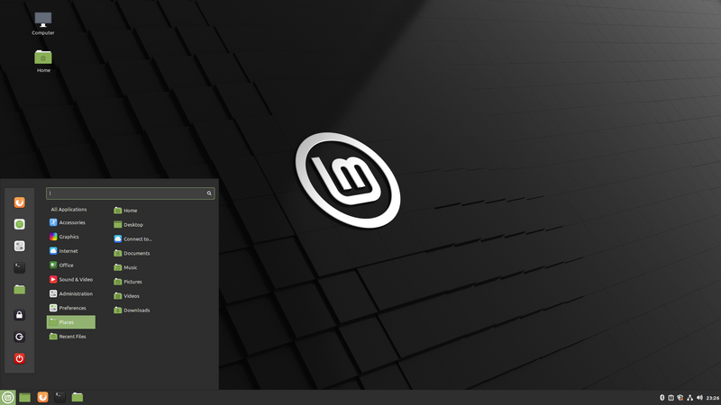

Qual é a melhor distro linux?
Linux, ao contrario do que muitos pensam, não é um sistema operacional, na verdade é apenas um kernel, o nucleo de um sistema operacional. Para que ele funcione bem no seu sistema desktop, é necessario uma “distro” uma distribuição focada no ambiente desktop.
Existem varias distros linux, algumas mais simples que entregam um sistema poderoso e facil de usar. Outras distros são mais avançadas, dando um controle maior ao usuario, porém são mais complexas e requerem um conhecimento maior. Nesse artigo vamos explorarar as diferentes distros Linux, e descobrir qual se encaixa melhor para o seu uso.
Ubuntu
Ubuntu é uma das distros Linux mais amadas dentre usuarios mais novos, e usuarios mais antigos. Lançado em 2004 pela empresa canonical, com o objetivo de criar um sistema operacional acessivel e amigavel para usuarios mais simples. A distro se baseia em debian (uma das distros Linux mais antigas) e por conta disso é compativel com pacotes .deb, além de usar o apt como seu gerenciador de pacotes.
Ubuntu, além de entregar um sistema completo, tambem suporta diferentes “flavors” tipos diferentes de Desktop Enviroment (DE), cada um com sua própria interface grafica, e seus próprios programas basicos, como editores de texto, calculadoras, visualizadores de imagem, video, navegadores, etc. Sendo o Gnome sua DE princial.
Mint
Linux mint, laçado em 2006 pela equipe irlandesa Linux Mint Team, é uma distro baseada em Ubuntu, portanto possui suporte para pacotes .deb e usa o apt como gerenciador de pacotes. A maior diferença entre o Mint e o Ubuntu é seu DE, o Cinnamon, desenvolvido pela própria equipe do Linux Mint, esse DE proporciona uma maior customização, apesar de muitos usuarios reclamarem de seu visual padrão, que parece um pouco antigo. Além disso o Mint possui suporte para outros dois DEs, o Mate e o Xfce, o ultimo sendo recomendado para computadores mais fracos.
